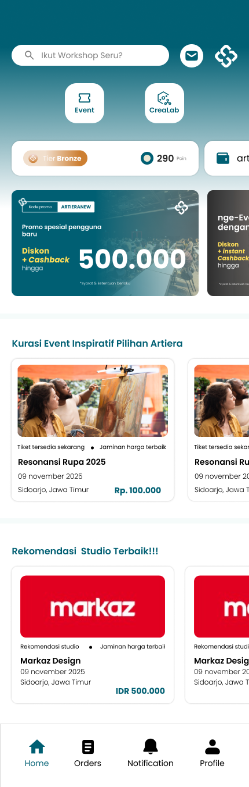
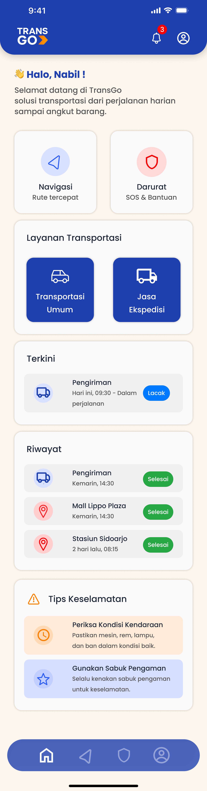
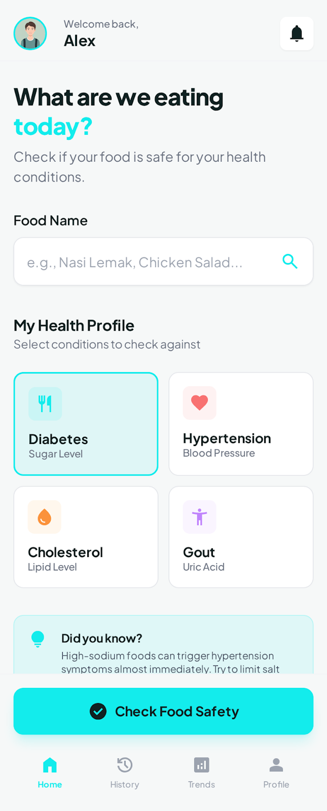
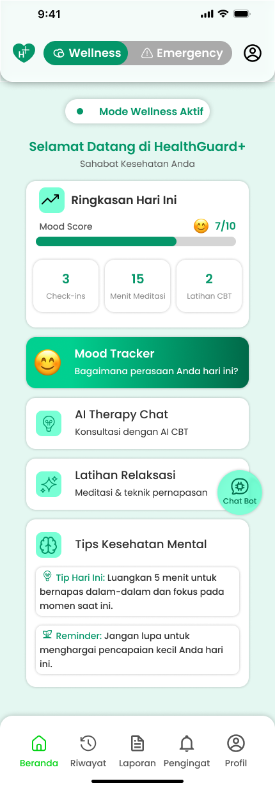
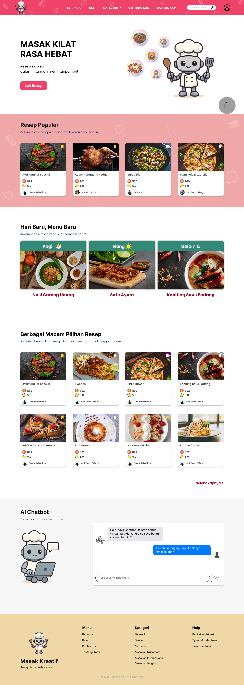
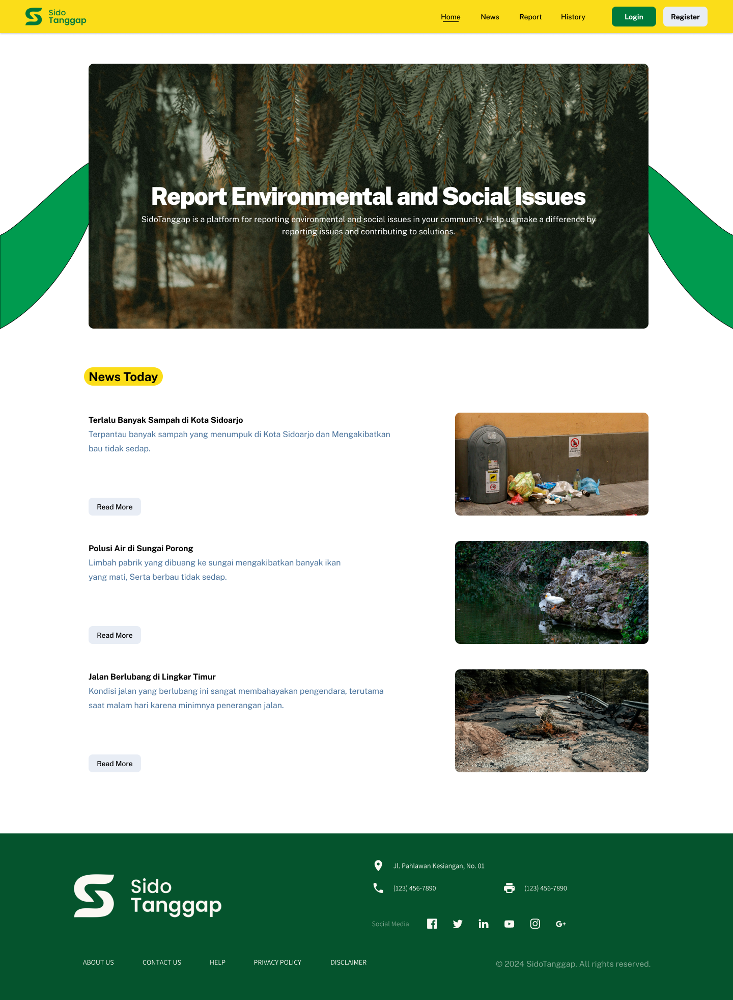
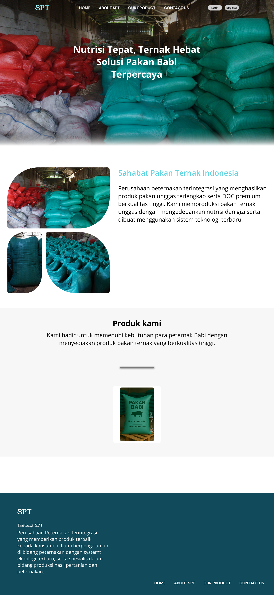

Deva Misbakhul Khuluq
Junior UI/UX Designer
Menciptakan pengalaman digital yang bermakna melalui sudut pandang yang berpusat pada pengguna. Berfokus pada kejelasan, aksesibilitas, dan kegunaan.
View Work ↓
Menciptakan pengalaman digital yang bermakna melalui sudut pandang yang berpusat pada pengguna. Berfokus pada kejelasan, aksesibilitas, dan kegunaan.
View Work ↓Saya Deva Misbakhul Khuluq, saya adalah angkatan ke-6 SMK Telkom Sidoarjo dengan jurusan SIJA. Di Sekolah, saya mengikuti ekstrakurikuler Silat, Saya memiliki potensi di bidang teknologi, khususnya desain UI/UX dan frontend. Selain itu, saya juga berminat dan tertarik pada frontend developer Saya menekuni hobi yakni olahraga lari. Saya berkomitmen untuk terus belajar dan berkembang serta meningkatkan soft skill dan hard skill.

Juara 2 lomba UI/UX Design, aplikasi ini menjual tiket pameran dan jasa design.

Aplikasi penyedia jasa ekspedisi dan angkutan umum.

Aplikasi untuk mengidentifikasi makanan berbasis AI untuk penderita penyakit.

Aplikasi mood tracker dan emergency call.

Webesite resep makanan disertai dengan AI.

Website untuk melaporkan masalah lingkungan di kabupaten Sidoarjo.

Website penjualan pakan ternak, projek ini bekerja sama dengan mitra Sahabat Pakan Ternak.